A proposed mobile app for the Murugan Temple of St. Louis — bringing the schedule, services, sponsorships, giving and timely updates into one place.
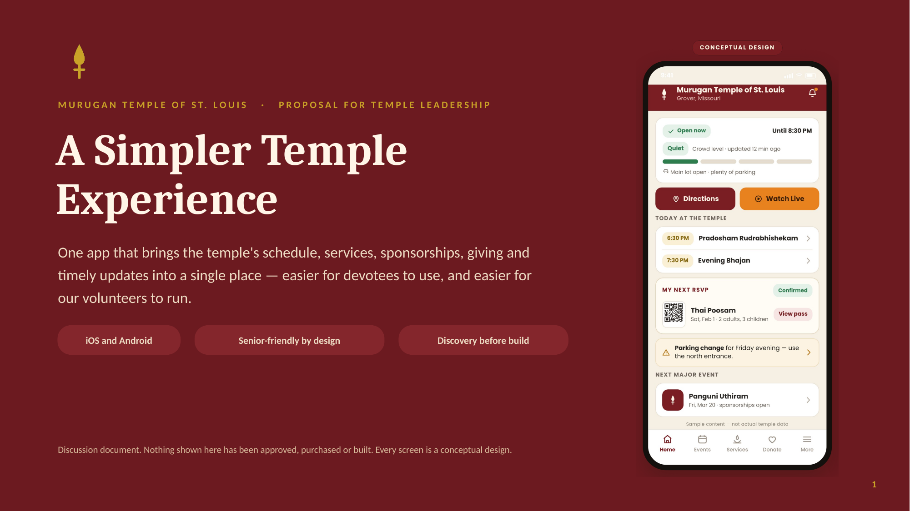
Opening (about 60 seconds).
Say: "Thank you for the time. What I'd like to show you today is a picture of what a temple app could feel like — and then ask for permission to go and check whether it is right."
Make the one-sentence case: the temple already has a good website. What it does not have is something that reaches a devotee's pocket — that reminds them, shows them their own booking, and tells them what is happening right now.
Set expectations twice, clearly: every screen in this deck is a conceptual design, drawn to make the conversation concrete. No app exists. Nothing has been bought. Nobody has been hired.
Likely question: "How much will this cost?" — Answer: that is exactly what we are not able to say responsibly yet, and slide 12 explains what we are asking for instead.
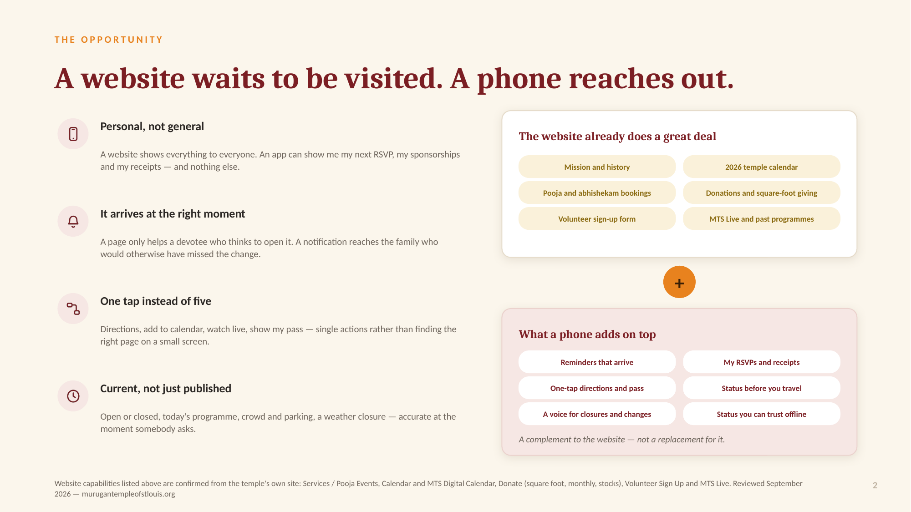
Message: mobile is a different reach, not a prettier website.
Say: "Everything on the right-hand side of this slide already exists and works. I am not here to replace any of it. The question is what happens between visits to the website."
Walk the four points on the left quickly — personal, timely, fast, current. Land on the second one: the website cannot reach out. Only a notification can.
Likely question: "Couldn't we just send emails or WhatsApp messages?" — Answer honestly: yes, for some of this, and we should test that in discovery. Where a phone is genuinely different is the pass in your pocket, the one-tap directions, and status that is correct at the moment you look.
Assumption to validate: that devotees actually want notifications from the temple, and which kinds.
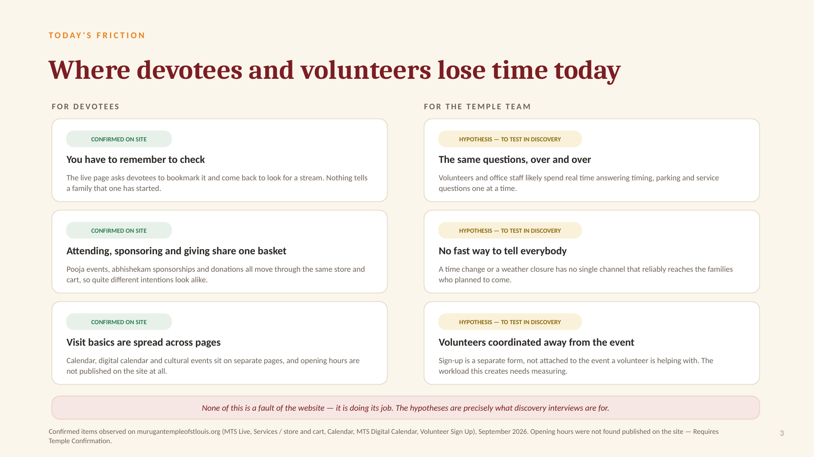
Message: name the friction honestly, and be equally honest about what we do not yet know.
Say: "Three of these I can show you on the website right now. Three are guesses — sensible ones, but guesses — and I would rather label them that way than dress them up as findings."
Point at the green labels versus the amber labels explicitly. That distinction is the credibility of this whole deck.
Do not attack the website. If anyone hears criticism, correct it immediately: the site is well maintained and does a lot; this is about the gap between visits.
Likely question: "Are people actually complaining?" — Answer: we do not have that evidence, which is why we are asking to go and interview people rather than asking to build.
Assumption to validate: whether opening hours exist and are published somewhere we did not find.
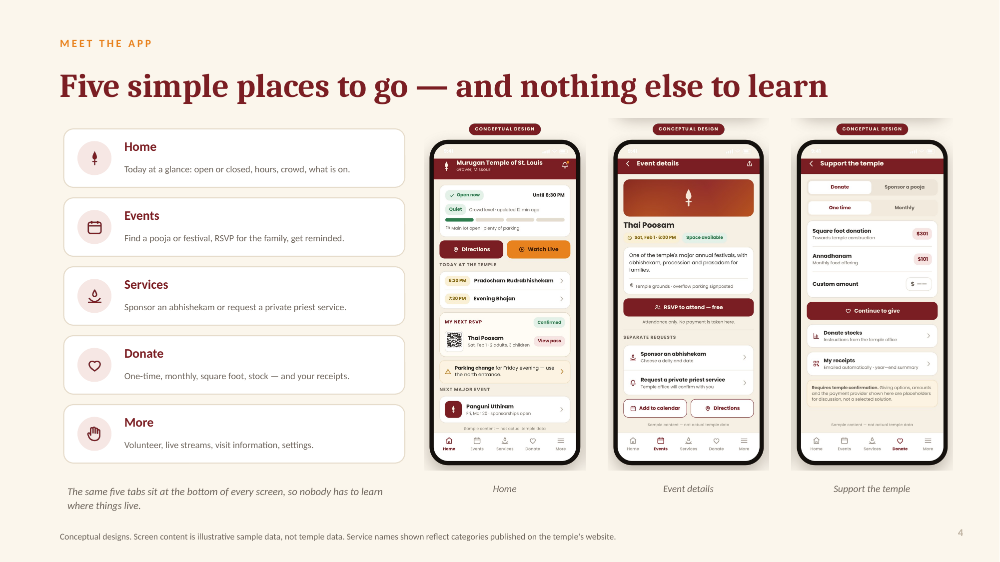
Message: the whole app is five tabs. That is the entire mental model.
Say: "If a devotee remembers nothing else, they only need to remember that the temple's app has five buttons at the bottom, and they never move."
Walk the five names slowly — Home, Events, Services, Donate, More. Point out that Services and Donate are deliberately separate, because sponsoring a pooja and giving to construction are different acts.
Invite them to look at the three screens rather than read them. The point is the feel: calm, uncluttered, large type.
Likely question: "Why not more features?" — Answer: because five is what a senior devotee can hold in their head, and because everything we add before we have talked to people is a guess.
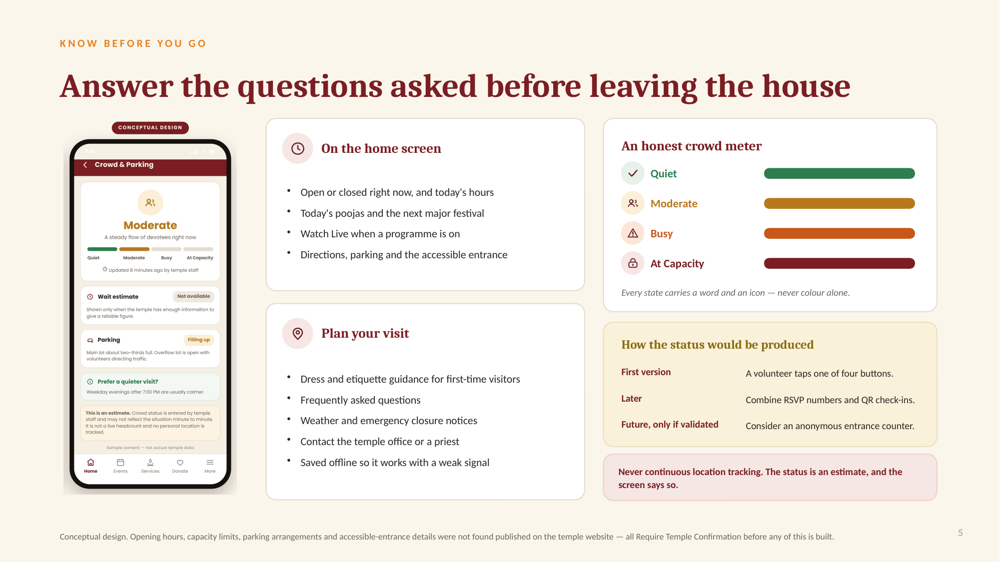
Message: the app answers the questions a family asks in the car, and it answers them honestly.
Say: "The single most common question before any visit is some version of 'what will it be like when we get there?' Today there is no good way to answer it."
Spend most of the time on the crowd meter, because it is the feature most likely to worry the board. Make three promises out loud: it is an estimate and labelled as one; it is entered by a person, not inferred from anyone's phone; and there is never any tracking of where devotees are.
Explain the three-step rollout in plain words: to begin with, a volunteer presses one of four buttons.
Likely question: "Who is going to keep it updated?" — Good question, and it is on the pilot list: if staff cannot keep it current, we should not ship it.
Likely question: "What if the estimate is wrong?" — Then it says 'updated 40 minutes ago' and people can judge for themselves. We would rather show staleness than pretend precision.
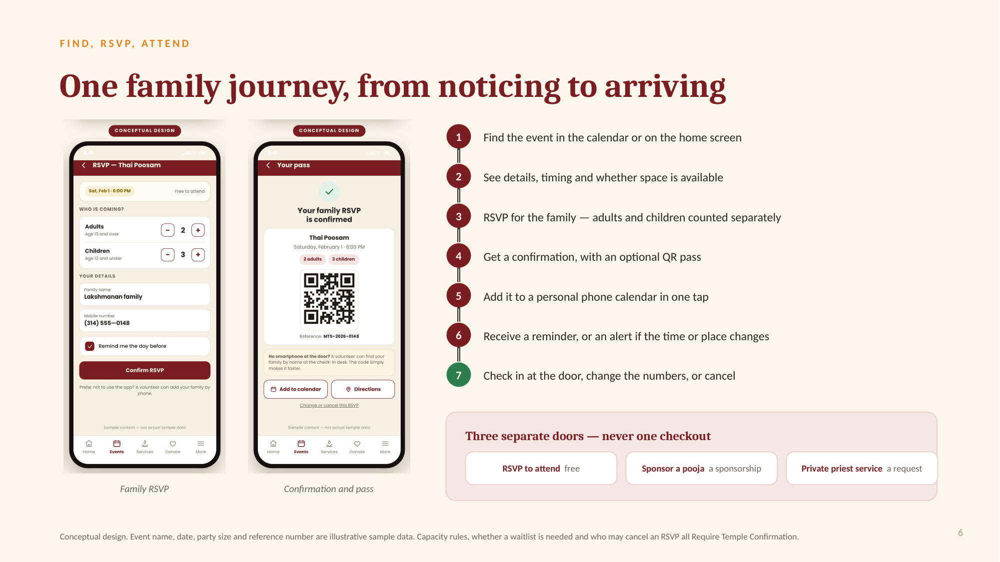
Message: one clear journey a family can complete in under a minute, and three requests that must never be blurred together.
Walk the seven numbered steps briefly — do not read every word. Stop at step four and hold up the confirmation screen: "this is the thing a family shows at the door."
Then make the separation point deliberately, because it matters to the priests in the room: attending is free and instant; sponsoring an abhishekam is a sponsorship with a receipt; a private priest service is a request that the office confirms. Three doors, never one basket.
Point out the note on the pass screen: a volunteer can still find a family by name. The QR only makes it faster.
Likely question: "What if the same family RSVPs twice, or does not turn up?" — That is exactly the sort of rule discovery has to settle with the people who run the door.
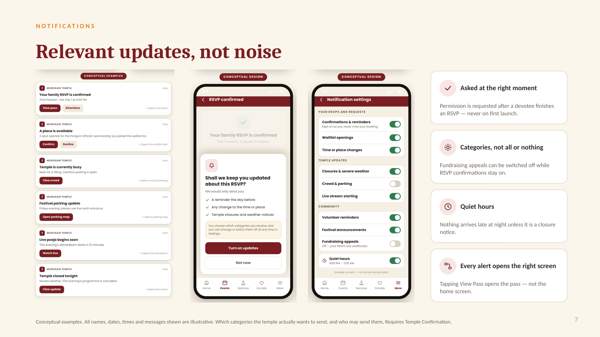
Message: notifications are the strongest reason to have an app at all — and the fastest way to lose people's trust if handled badly.
Read two of the example alerts aloud, ideally the closure one and the waitlist one. Those are the moments where a message genuinely helps a family.
Then move immediately to the controls, because that is what reassures a board. Three commitments: we ask only after somebody has done something that makes an alert relevant; devotees choose categories, so they can mute fundraising and keep their RSVP reminders; and nothing arrives late at night unless the temple is closed.
Make the deep-link point simply: if a message says View Pass, tapping it shows the pass. No hunting.
Likely question: "Will we annoy people?" — Only if we send things nobody asked for. The settings screen on the right is the answer, and opt-in rates are one of the pilot measures.
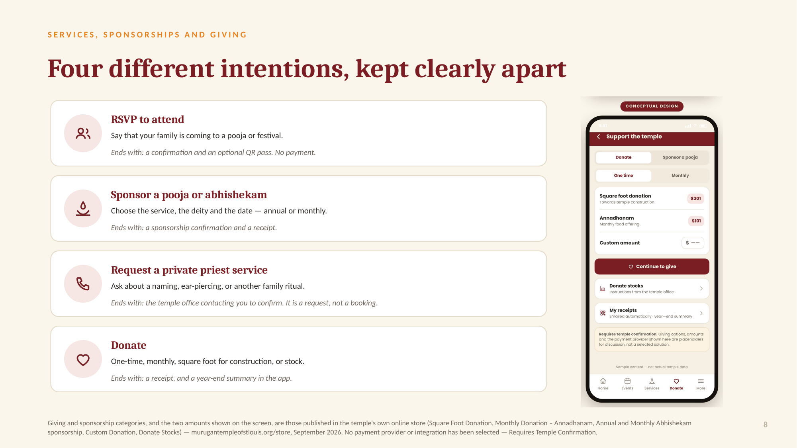
Message: four intentions that must never share a checkout.
Say: "Right now, saying you will attend, sponsoring an abhishekam and giving towards construction all pass through the same basket. In an app we can give each one its own door, and each one its own ending."
Emphasise the third lane for the priests: a private service is a request, not an instant booking. The app should never imply the temple has committed a priest before the office says so.
On money, be precise: the two amounts on the screen are the temple's own published figures, and no payment provider has been chosen. That is a discovery decision, and it belongs to the treasurer.
Likely question: "Will we pay card fees twice?" — Unknown, and worth checking. Payment constraints are explicitly on the validation list.
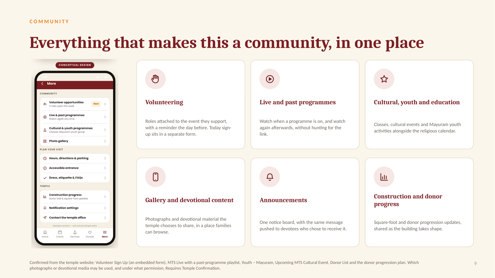
Message: the app is not only a booking tool. It is where the community's life is visible.
Say: "Everything on this slide already exists somewhere. What it does not have is one front door."
Give volunteering the most time. Today a person signs up on a form that has no idea which event they are helping with. Attaching a role to an event, and reminding the volunteer the day before, is one of the plainest wins in the whole proposal.
On the gallery, say clearly that we will not put any photograph or devotional media in the app without the temple confirming we may use it.
Likely question: "Who keeps all this current?" — The admin screen on the next slide is the answer, and volunteer effort is one of the things the pilot measures.
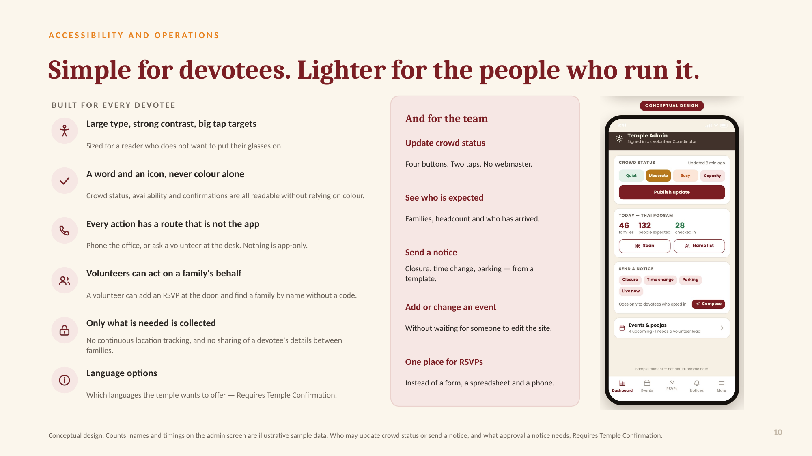
Message: this only works if it is easy for a seventy-five-year-old devotee and easy for a volunteer on a Saturday.
Take the left column slowly. The most important line is the third one: every single thing the app does can also be done by telephoning the office or asking a volunteer. Nobody is shut out for not owning a smartphone.
Then turn to the admin screen. Note that it is a phone, not a computer — because the person updating crowd status is standing in the car park, not sitting at a desk.
Likely question from a trustee: "Does this create more work for volunteers?" — Be honest: at first, yes, a little. Whether it saves more than it costs is one of the things the pilot is designed to find out, and administrative time is on the measures list.
Assumption to validate: language needs, and who is authorised to send a notice on the temple's behalf.
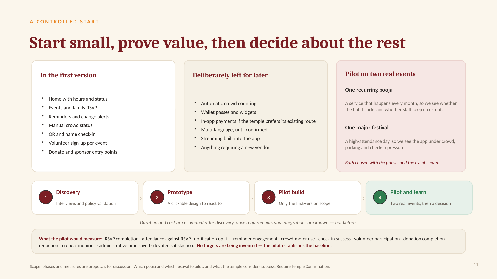
Message: we are proposing the smallest thing that could honestly prove or disprove the idea.
Say: "The middle column matters as much as the first. Knowing what we are not building is how a project like this stays affordable."
Explain the two pilot events in one line each: a recurring pooja tests whether the habit forms; a festival tests whether it survives a crowd.
Be very firm on money and dates. We are not giving a number today, because any number given before discovery would be invented. Cost drivers we already expect: how many integrations the temple needs, whether payments go through the existing store or a new route, how much content has to be migrated, and how much ongoing volunteer time is required.
On measures, say plainly: "We are not promising a percentage. The pilot sets the baseline, and then the board decides whether the numbers are worth continuing for."
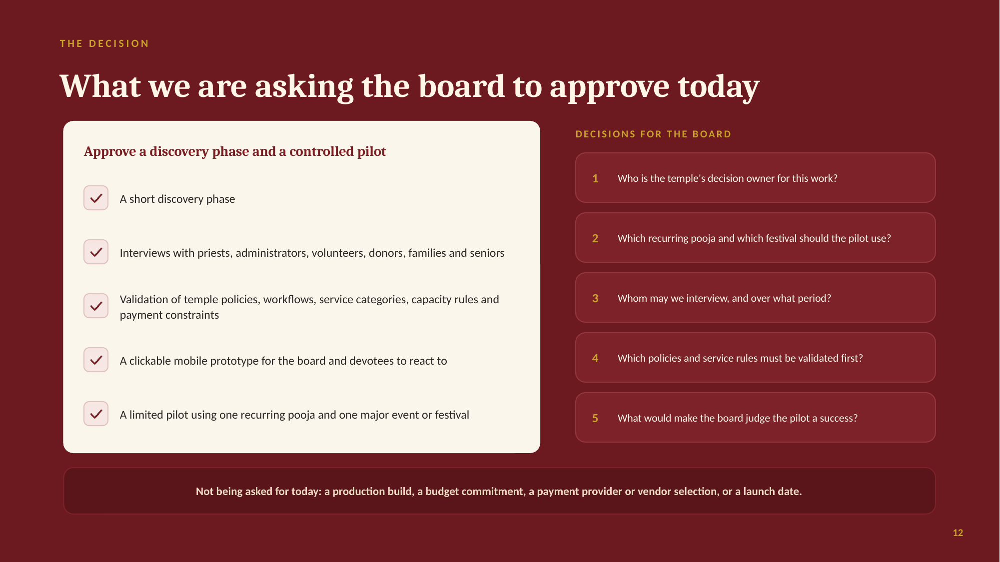
Closing (about 90 seconds). Slow down here.
Say: "I am not asking you to approve an app. I am asking for permission to find out whether we should build one."
Read the five items on the left out loud, one at a time. They are the whole request.
Then turn to the right-hand column and ask for those five decisions in the room, or a named person to settle them within a fortnight. Getting a decision owner is the single most valuable outcome of this meeting.
Finish on the dark bar at the bottom, deliberately: no production build, no budget, no vendor, no launch date. That is what keeps this a safe decision.
Likely objection: "Why not just build a simple version and see?" — Because we would be guessing at the temple's own rules: capacity, who may cancel, what a private service request means, how payments must run. Discovery is cheaper than rebuilding.
Likely objection: "We have fundraising priorities." — Agreed, and this proposal does not compete with them. Discovery is small, and it can be stopped after the prototype with nothing lost but time.
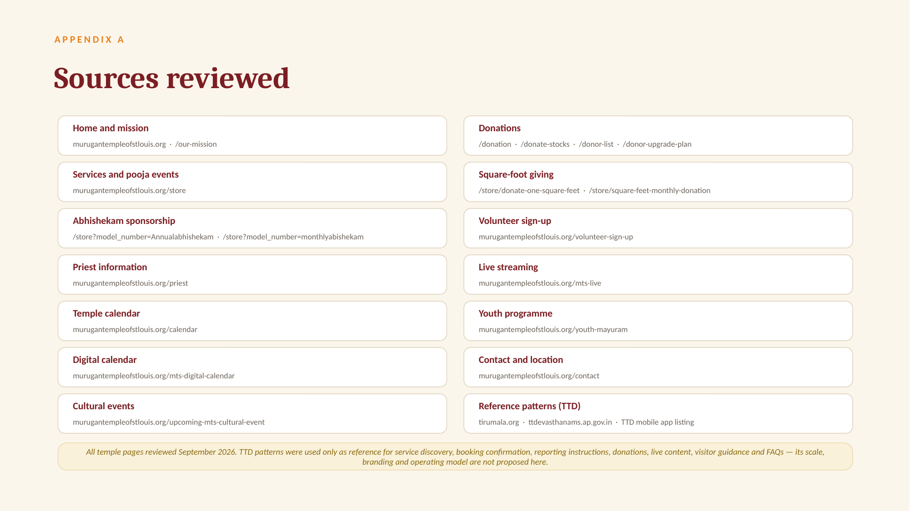
Reference slide. Do not present unless asked where a claim came from. Every green CONFIRMED label in the deck traces to one of these pages.
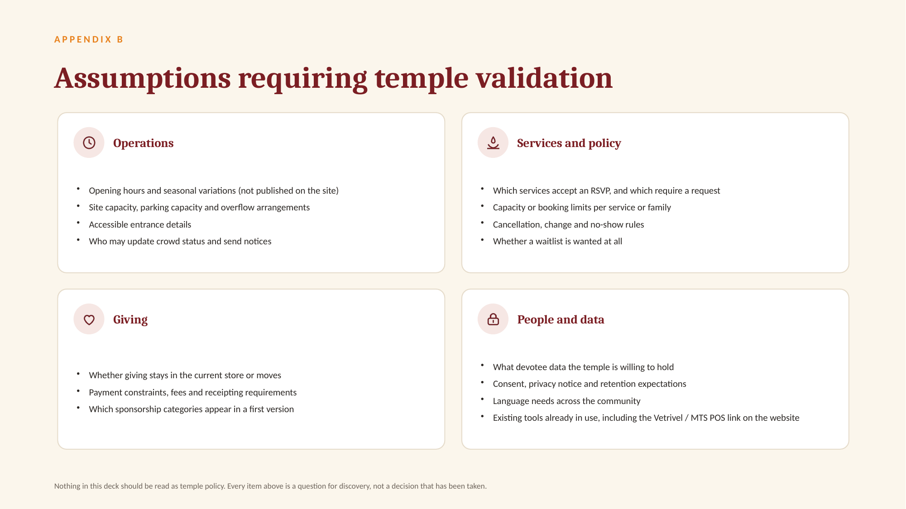
Reference slide. Use it if a trustee asks 'what don't you know yet?' — the honest answer is this list, and it is the reason for asking for discovery rather than a build.
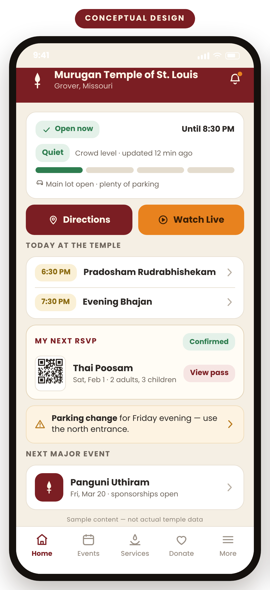
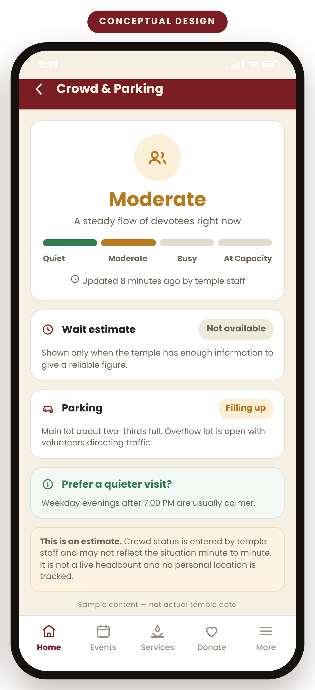
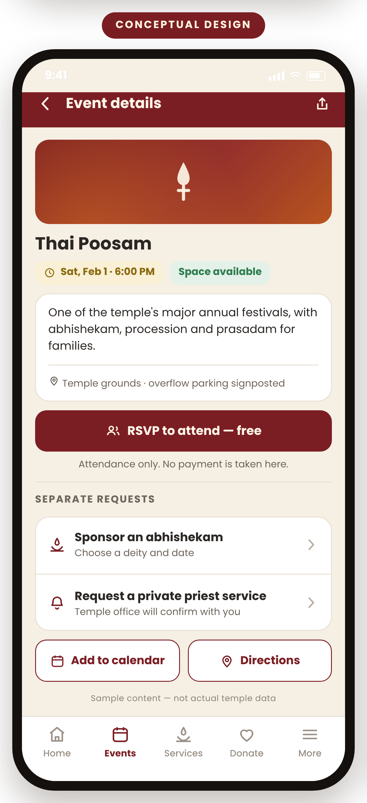
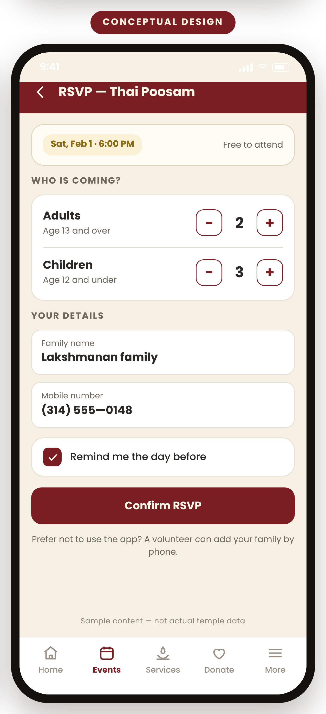
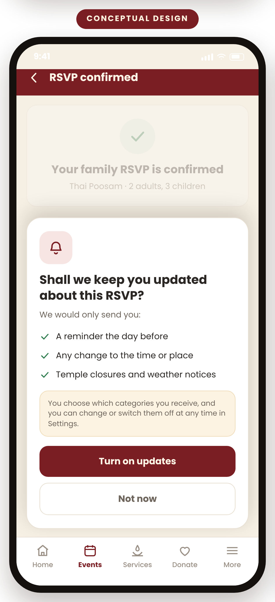
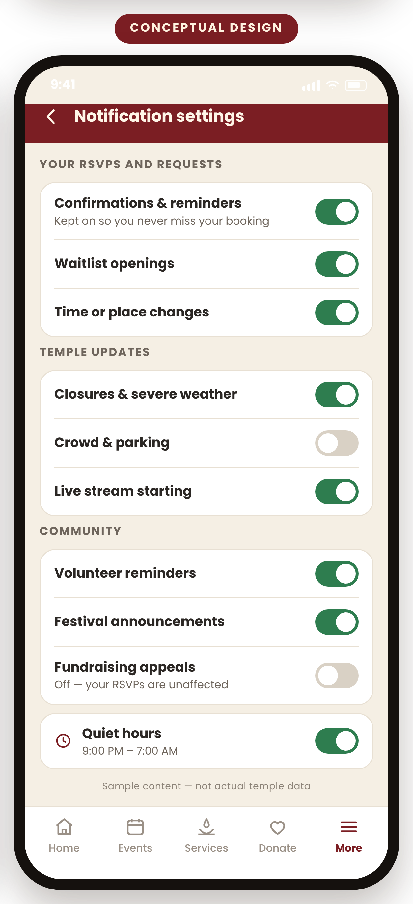
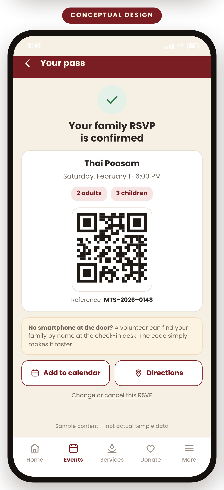
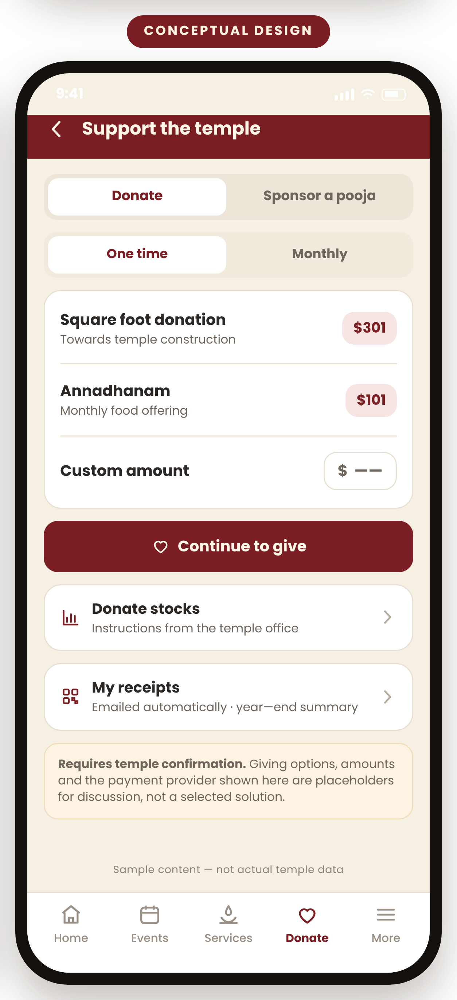
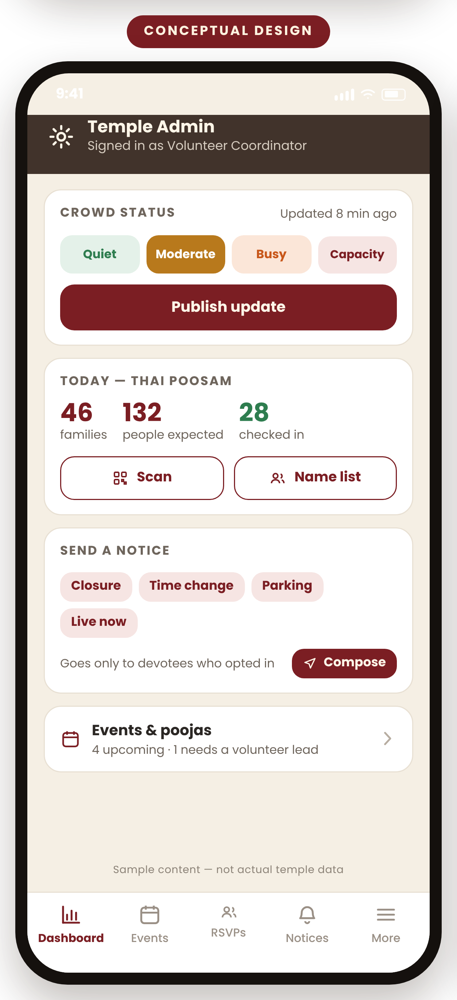
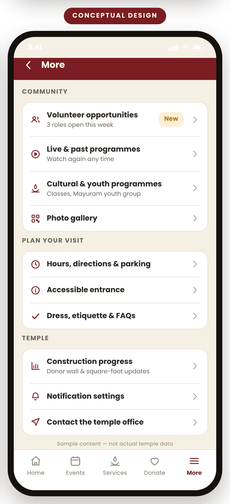
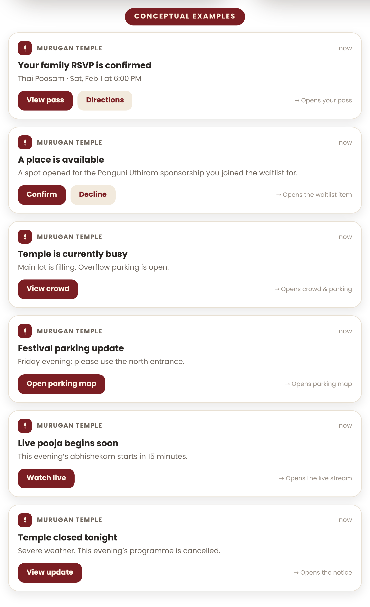
{kind=link}
{kind=link}
{kind=link}
{kind=link}
{kind=link}
{kind=link}
{kind=link}
{kind=link}
{kind=link}
{kind=link}
{kind=link}